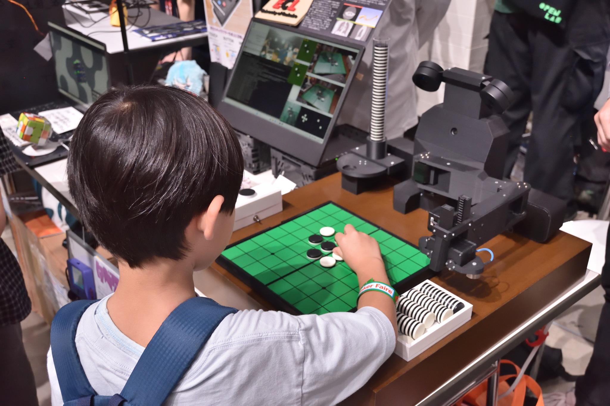
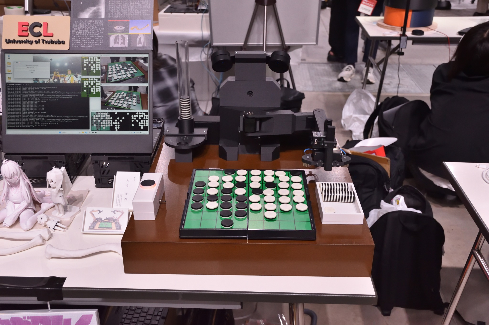
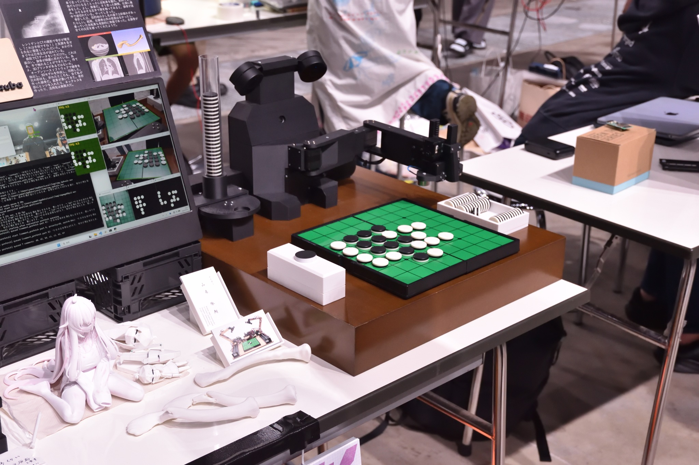

Maker Faire Tokyo 2026
Othello Robot, Electric Paper Puppet, Toothbrush Cup, and more. (2026)
I exhibited as University of Tsukuba Entertainment Computing Laboratory.
My exhibit is the Othello Teaching Robot "Minoth" and "My Clavicle."





Details
Official page: Maker Faire Tokyo 2026
Date and time: September 5, 2026 (Sat) 12:00-18:00, September 6, 2026 (Sun) 10:00-17:00
Venue: Ariake GYM-EX (1-10-1 Ariake, Koto-ku, Tokyo)
Admission:
- [Super early bird] Adults JPY 1,000 / Under 18 JPY 400
- [Advance] Adults JPY 1,400 / Adults (evening discount) JPY 1,000 / Under 18 JPY 500
- [At the door] Adults JPY 1,800 / Adults (evening discount) JPY 1,300 / Under 18 JPY 700
Booth: B-04-03
Exhibitor page